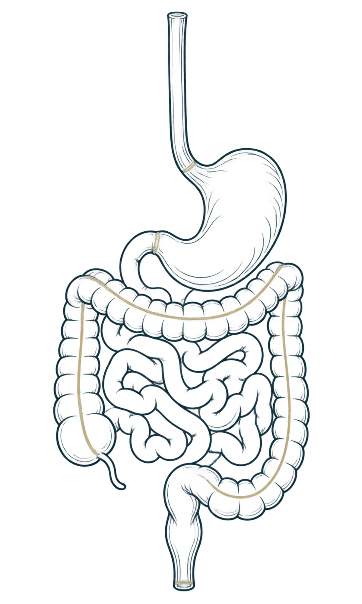
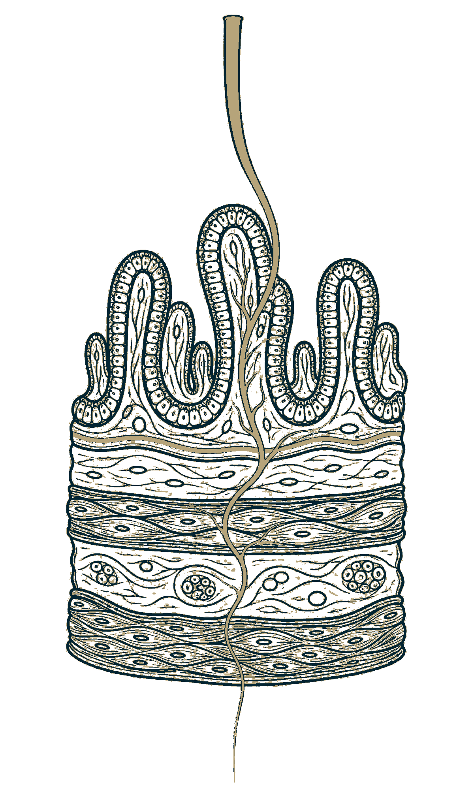

Sistema digestivoEsto es lo que miran las pruebas. Y casi siempre lo encuentran bien.
EstómagoAquí empieza la digestión de verdad. Ácido y enzimas.
Intestino delgadoAquí se absorbe lo que comes, y aquí se nota cuando algo va lento.
ColonEl gas, el ruido y la hinchazón que sí notas.
La pared, por dentroNo tiene que estar rota para doler. Basta con que esté sensible.
La señalSale pequeña de aquí abajo. Y llega al cerebro mucho más grande.
A eso lo llamamos hipersensibilidad visceral.